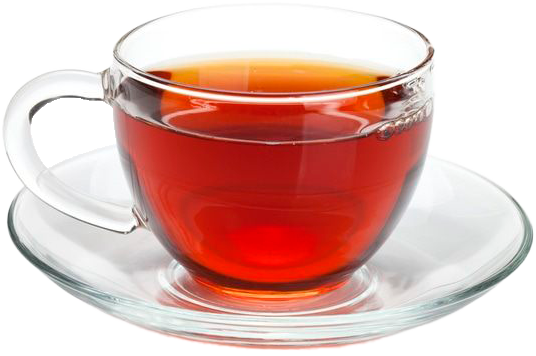
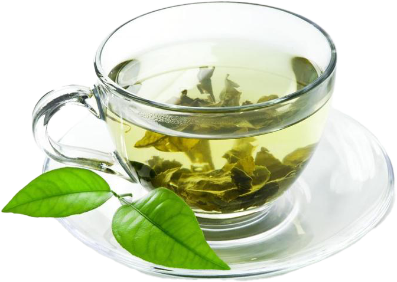
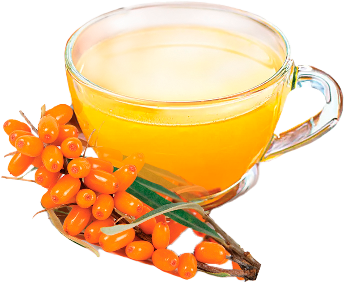
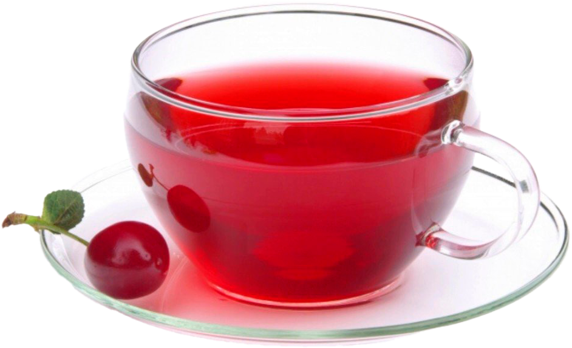
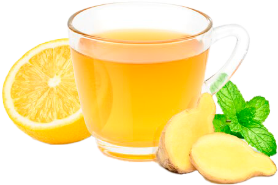
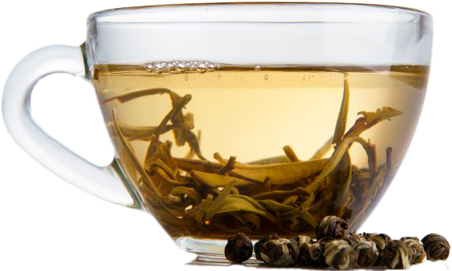
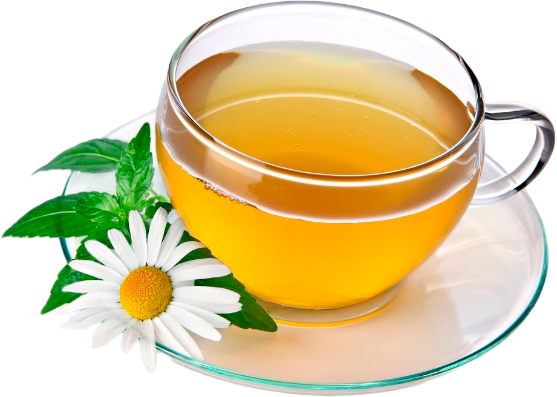
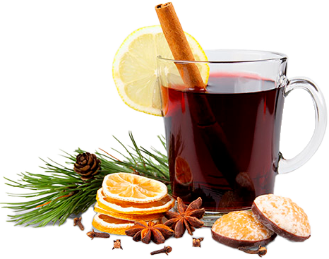

טבלו את עצמכם בעולם מסורות התה והטעם

תה שחור -תה שחור קלאסי

תה ירוק-תה ירוק קלאסי

תה תות -תותים עשירים בחומצה אסקורבית וויטמינים מקבוצה B, זה גם מגביר את החסינות ויש לו טוניק קל השפעה ומרימה את מצב הרוח

תה קרקייד -תה עם טעם וארומה יוצאי דופן, בעל תכונות ייחודיות, ניתן לשתות חם וקר

תה אשחר ים -אחד הגרגרים השימושיים ביותר המכיל כמות עצומה של חומרים מועילים. טוב במיוחד לשתות את עירוי בעונה הקרה, מכיוון שהוא לא רק מתחמם, אלא גם מגביר את החסינות

תה דובדבן-מהלגימה הראשונה של תה זה תרגישו פיצוץ דובדבן של טעם וארומה

לימון זנגביל-תה אידיאלי לקיץ, מכיוון שהוא יכול להיות קר בשכרות. בתה קר, כל התכונות השימושיות האופייניות לחום המשקה נשמר

תה ירוק חלב-תה ירוק עם ארומת החלב יהווה תגלית נעימה עבור מחפשי הטעם המעודן
תה יסמין-יש לו טעם מתוק, אך מאופק ולא פולשני. יסמין אינה קוטעת את הריח הטבעי של עלה התה. הם צרו קומפוזיציית טעם יפה בזוג, אשר בהחלט תעריכו במהלך מסיבת תה

תה לבן -זו יצירת מופת. תה שגדל בהצלחה, הוכן בהצלחה והתיישן בהצלחה. היה לו מזל כל שלבי היווצרותו. זהו גבר חתיך, וזה לא מספיק

תה קמומיל-תה עם טעם וארומה מעולים, מרגיע ועם הרבה תכונות רפואיות
